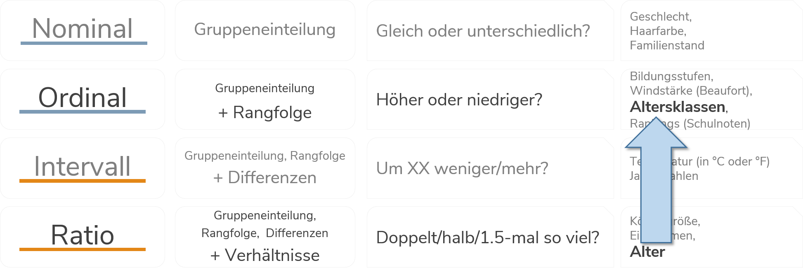

4 Deskriptive Statistik
4.1 Metrische Variablen beschreiben
Im vorherigen Kapitel bezog sich vor allem kategoriale Variablen (mit einer begrenzten Anzahl an Ausprägungen). Für ein metrisches Merkmal, wie zum Beispiel das Alter (zpalter) macht eine Häufigkeitstabelle wenig Sinn, da das Alter sehr viele Ausprägungen hat und eine Tabelle unübersichtlich wäre (es gibt insgesamt 71!).
4.1.1 Exkurs: Klassen bilden
Um dieses Problem zu umgehen, könnten wir die Informationen in Klassen/Gruppen zusammenzufassen. So transformieren eine metrische Variable in eine kategoriale, ordinale Variable:

Hier nur ein ganz kurzes Beispiel, in Kapitel 4 werden wir uns ausführlicher mit der Erstellung von Variablen in Stata beschäftigen.
Für diese Transformation können wir in Stata den egen-Befehl nutzen.
Um die Klassen zu bilden, nutzen wir egen zusammen mit der Funktion cut(). In cut geben wir die zu unterteilende Variable an, außerdem legen wir in at() die Grenzen fest. Die so generierten Werte legen wir in einer neuen Variable age_cat ab:
egen age_cat = cut(zpalter), at(15 18 35 60 100 ) label(176 missing values generated)Für die neue, klassierte Variable können wir dann wieder mit tabulate eine Häufigkeitstabelle anfordern:
tabulate age_cat age_cat | Freq. Percent Cum.
------------+-----------------------------------
15- | 10 0.05 0.05
18- | 3,351 16.89 16.94
35- | 13,855 69.85 86.79
60- | 2,620 13.21 100.00
------------+-----------------------------------
Total | 19,836 100.00Bspw. erkennen wir in dieser Tabelle, dass 69.85% der Befragten zwischen 35 und 59 Jahre alt sind (Cum. \(\Rightarrow\) 86.79% sind bis zu 59 Jahre alt).
Allerdings geht uns dadurch sehr viel Information verloren: wir ‘erkaufen’ uns die Übersichtlichkeit durch einen Verlust an Präzision bzgl. der Altersangaben.
4.1.2 Lage- und Konzentrationsmaße
Allerdings können metrische Variablen auch direkt Hilfe von Lage- und Konzentrationsmaßen beschrieben werden.
Klassische Lagemaße zur Beschreibung von metrischen Variablen sind bspw. Minimum und Maximum, das arithm. Mittel sowie der Median und Quantile. Auch hier haben wir bereits den wichtigsten Befehl kennen gelernt: summarize gibt uns einen ersten Überblick zur Verteilung einer metrischen Variable:
summarize zpalter Variable | Obs Mean Std. Dev. Min Max
-------------+--------------------------------------------------------
zpalter | 19836 47.19228 11.33762 15 87Wir erfahren also, dass die Befragten im Mittel 47.19228 Jahre alt sind, die jüngsten Befragten 15 Jahre alt und ältesten Befragten sind 87 Jahre alt.
Mit der Option ,detail bekommen wir eine deutlich umfangreichere Auskunft:
summarize zpalter, detail Alter der Zielperson
-------------------------------------------------------------
Percentiles Smallest
1% 21 15
5% 27 16
10% 31 16 Obs 19836
25% 38 16 Sum of Wgt. 19836
50% 49 Mean 47.19228
Largest Std. Dev. 11.33762
75% 56 81
90% 61 82 Variance 128.5417
95% 63 83 Skewness -.3866576
99% 68 87 Kurtosis 2.377842Hier wird eine ganze Menge auf einmal angezeigt - die Kennzahlen sind dabei in drei Spalten organisiert:
Aus der ersten Spalte erfahren wir die Quantile (
Percentiles). Ein Quantil einer Verteilung trennt die Daten so in zwei Teile, dassx% der Daten darunter und 100-x% darüber liegen. Hier können wir zB ablesen, dass 25% der Befragten 38 Jahre oder jünger sind. 95% der Befragten sind <= 63 Jahre alt. Dementsprechend sind 5% der Befragten 63 Jahre oder älter. Die 50%-Grenze für das Alter (der Median) liegt bei 49 Jahren.Mehr zu Perzentilendie zweite Spalte gibt uns jeweils die 4 kleinsten und größten Werte für das Alter aus: die 4 kleinsten Alterswerte sind jeweils 15,16,16,16 die größten Werte sind 81,82,83 und 87.
in der dritten Spalte bekommen wir eine Reihe weiterer Informationen:
- die Zahl der Beobachtungen (
Obs) und das arithmetische Mittel (Mean) mehr zum arithm. Mittel - die Streuung anhand der Standardabweichung (
Std. Dev.) und Varianz (Variance) mehr dazu - sowie die Schiefe (
Skewness) und Wölbung (Kurtosis) mehr dazu
- die Zahl der Beobachtungen (
4.1.3 tabstat
Häufig möchten wir aber vielleicht nur eine bestimmte Information. Dafür ist tabstat eine gute Lösung. Mit tabstat können wir eine ganze Reihe statistischer Kennzahlen für metrische/kontinuierliche Merkmale berechnen. Die Syntax hat dabei das folgende Format: tabstat zpalter, s(*kennzahl*)
| Option | Kennzahl | Kommentar |
|---|---|---|
| mean | arithm. Mittel | “Durchschnitt” mehr |
| median | Median | 50% Grenze mehr |
| count | Anzahl der Beobachtungen ohne Missings | |
| n | entspricht count | |
| sum | Summe der Ausprägungen | |
| max | Maximum | Höchster Wert |
| min | Minimum | Niedrigster Wert |
| range | Spannweite = max - min | Wie groß ist der Abstand zwischen kleinstem und größtem Wert? |
| variance | Varianz | siehe hier |
| sd | Standardabweichung | siehe hier |
| cv | Variationskoefficient (sd/mean) | siehe hier |
| skewness | Schiefe | siehe hier |
| kurtosis | Wölbung | siehe hier |
| pX | X. Perzentil (5,10,25,50,75,90,95,99) | zb. p5 \(\rightarrow\) Grenze, unterhalb welcher X% der Beobachtungen liegen |
| iqr | Interquartilsdistanz = p75 - p25 | Wie groß ist der Abstand zwischen der 25% und 75%-Grenze? |
| q | Entspricht p25 p50 p75 |
Hier ein Bespielbefehl für die Berechnung des arith. Mittels, des Medians, der Varianz und des Varianzkoeffizienten mit tabstat:
tabstat zpalter, s(mean median var cv) variable | mean p50 variance cv
-------------+----------------------------------------
zpalter | 47.19228 49 128.5417 .2402432
------------------------------------------------------Allerdings lassen sich mit tabstat nicht beliebige Quantil-Grenzen (nur für 5,10,25,50,75,90,95,99) berechnen, dafür können wir centile nutzen:
centile age, centile(35) -- Binom. Interp. --
Variable | Obs Percentile Centile [95% Conf. Interval]
-------------+-------------------------------------------------------------
zpalter | 19836 35 44 43 44Aus den Angaben unter Centile erfahren wir, dass 35% der Befragten im Datensatz sind 44 Jahre alt oder jünger sind. Dementsprechend sind 65% der Befragten 44 Jahre oder älter.
4.1.4 Kennzahlen vergleichen mit tabstat
Interessant sind diese Kennzahlen auch wieder erst im Vergleich zwischen Gruppen. Hierfür steht uns die by()-Option von tabstat zur Verfügung. Bspw. können wir die Altersangaben von Männern und Frauen vergleichen, indem wir in tabstat die Option by(S1) verwenden:
tabstat zpalter, s(mean median var cv) by(S1)Summary for variables: zpalter
by categories of: S1 (Geschlecht)
S1 | mean p50 variance cv
----------+----------------------------------------
männlich | 46.49079 49 141.0736 .2554795
weiblich | 47.90402 50 114.8336 .2236982
----------+----------------------------------------
Total | 47.19228 49 128.5417 .2402432
---------------------------------------------------Wir sehen hier also, dass sowohl das arith. Mittel als auch der Median des Befragtenalters bei Frauen höher ist als bei Männern. Außerdem ist die Streuung bei Männern höher als bei Frauen.
Eine andere Option ist es, auf den if-Befehl zurückzugreifen - siehe hier
4.1.5 Streuungsmaße: Varianz, Standardabweichung, Variationskoeffizient
Streuungsmaße helfen uns zu beurteilen, wie groß die Unterschiede in unseren Daten sind. Je größer das Streuungsmaß, desto mehr Unterschiede gibt es zwischen den beobachteten Werten.
Die häufigste Kennzahl zur Beschreibung von Streuung ist aber die Varianz. Die Varianz ist definiert als die durchschnittliche quadrierte Abweichung vom arith. Mittel: \[var(x) = \frac{\sum_{i=1}^{n} (x_{i}-\bar{x})^2}{n}\]
Was bedeutet diese Formel?
Wir können die Varianz mit tabstat , s(var) berechnen:
tabstat zpalter, s(var) variable | variance
-------------+----------
zpalter | 128.5417
------------------------In unseren Datensatz beträgt der Varianz des Alters also 128,5417 Jahre². Auf der Varianz beruhen noch zwei weitere Streuungsmaße. Die Standardabweichung entspricht der Wurzel der Varianz und hat somit die gleiche Maßeinheit wie die Variable (hier also Jahre):
dis sqrt(128.5417)Wir können die Standardabweichung auch mit tabstat , s(sd) berechnen:
tabstat zpalter, s(sd) variable | sd
-------------+----------
zpalter | 11.33762
------------------------Der Variationskoeffizient entspricht sd/mean und dient dem Vergleich verschiedener Streuungen relativ zum jeweiligen Mittelwert, tabstat , s(cv) übernimmt die Berechnung für uns:
tabstat zpalter, s(cv) variable | cv
-------------+----------
zpalter | .2402432
------------------------Somit können wir bspw. mit Hilfe von ,by(S1) die Streuung des Alters bei männlichen und weiblichen Befragten vergleichen:
tabstat zpalter, s(cv) by(S1)Summary for variables: zpalter
by categories of: S1 (Geschlecht)
S1 | cv
----------+----------
männlich | .2554795
weiblich | .2236982
----------+----------
Total | .2402432
---------------------\(\Rightarrow\) Für welches Geschlecht ist die Streuung also größer?1
4.1.6 Gini-Koeffizient
Zur Beschreibung der (Ungleich-)Verteilung von metrischen Variablen, insbesondere bei Einkommens- und Vermögensdaten wird häufig der Gini-Koeffizient verwendet. Der Gini-Koeffizient beruht auf der Fläche zwischen der Lorenzkurve und der Gleichverteilung. Auf der x-Achse werden die kumulierten Perzentile der Befragten abgetragen, auf der y-Achse die Perzentile des HH-Einkommens:

 Den Gini-Koeffizienten können wir mit
Den Gini-Koeffizienten können wir mit fastgini berechnen, allerdings müssen wir diesen Befehl erst (einmalig) installieren:
ssc install fastgini
fastgini F518_SUFGini coefficient = 0.3543509Leider funktioniert by(S1) bei fastgini nicht, wir müssen hier auf die Variante mit if zurückgreifen:
fastgini F518_SUF if S1 == 1Gini coefficient = 0.3361488fastgini F518_SUF if S1 == 2Gini coefficient = 0.3403522\(\Rightarrow\) Wo sind die Haushaltseinkommen also ungleicher verteilt?2
Anmerkung: hier wurden die Missings in di05 mit mvdecode di05, mv(-50 -32 -7) ausgeschlossen.
4.2 Übungen 3
4.2.1 Übung 3-1
- Wir interessieren uns für die Variable
gkpol.
Laden Sie den Allbusdatensatz für 2018 Allbus2018.dta in Stata:
cd "..." // wo liegt der Datensatz?
use Allbus2018.dta+ Lassen Sie sich eine Tabelle für `gkpol` anzeigen. Welche ist die häufigste Ausprägung?
+ Hat die Variable fehlende Werte, die Sie ausschließen sollten? Falls ja, ersetzen Sie diese Werte mit `mvdecode`. Tipp: Verwenden Sie `labelbook` oder sehen Sie im Codebuch nach.
+ Lassen Sie sich die Tabelle erneut ausgeben. Sind die fehlenden Angaben noch in der Tabelle?
+ Lassen Sie sich die Tabelle *inklusive der Missings* ausgeben.
+ Beantworten Sie die folgenden Fragen auf Basis der Tabelle ohne Missings:
+ Welcher Anteil der Befragten leben in einem Ort mit höchstens 49.999 Einwohnern?
+ Wie groß ist der Anteil der Befragten, die in einem Ort mit mindestens 100.000 Einwohnern leben?
+ Erstellen Sie nun eine Kontigenztabelle mit `gkpol` und `sex` (Anm.: `sex` hat keine Missings). Welche Merkmalskombination ist die häufigste?
+ Welcher Anteil der Befragten aus Städten mit über 500.000 Einwohnern ist weiblich?
+ Wie hoch ist der Anteil der Männer an Befragten, die in Orten mit unter 2.000 Einwohnern leben?
+ Welcher Anteil der Frauen lebt in Städten mit 50.000 bis 99.999 Einwohnern?
+ Wie hoch ist der Anteil der Bewohner von Städten mit 20.000 bis 49.999 Einwohnern an allen befragten Männern?- Lassen Sie sich eine Auszählung der Wohnortgröße lediglich für die Befragte ausgeben, die zwischen 1960 und 1950 geboren sind.
4.2.2 Übung 3-2
- Laden Sie den Allbus 2018 (
Allbus2018.dta). Vergleichen Sie die Einkommensangaben (inc) von Frauen und Männern!- Betrachten Sie die HH-Einkommensverteilungen mit
summarize(Variableinc) - Denken Sie daran, die negativen Werte für
incmit.zu überschreiben! (Entweder mitreplaceodermvdecode, sehen Sie mitlabelbookoder im Codebuch nach) - Berechnen Sie das arithm. Mittel, den Median, das 25%- und 75%-Quartil sowie die Varianz und den Variationskoeffizienten zunächst für alle Fälle - was sagen Ihnen die Werte jeweils?
- Berechnen Sie nun alle Werte getrennt für Männer und Frauen (Variable
sex) - welche Werte erhalten Sie jeweils für die Kennzahlen? - Vergleichen Sie die Werte!
- Berechnen Sie den Gini-Koeffizenten! (Denken Sie daran, vor der ersten Verwendung
fastginizu installieren - siehe hier) - Vergleichen Sie auch hier jeweils die Werte für Männer und Frauen!
- Betrachten Sie die HH-Einkommensverteilungen mit
- Sie wollen nun die Jahre für den Schulabschluss nur für Befragte ansehen, die aus Wohnorten unter - nutzen Sie passende
if-Bedingung! (Geschlecht ist in VariableS1abgelegt) + Wählen Sie alle Befragten aus, die nach 1960 geboren wurden und löschen Sie alle anderen aus dem Speicher. (Siehe Kap 1.8) + Wie viele Spalten hat der Datensatz nach dieser Veränderung? Wie viele Zeilen?
4.3 Weitere Übungen 3
Forschungsfrage: Vergleichen Sie die Haushaltseinkommensverteilung in Ost und West!
- Laden Sie den kumulierten Allbusdatensatz (
Allbus_1980-2018.dta).- Fokussieren Sie zunächst auf das Befragungsjahr 1994 mit Hilfe von
keep if year == 1994oderdrop if year != 1994. - Betrachten Sie die HH-Einkommensverteilungen (Variable
di05) - Denken Sie daran, die negativen Werte für
di05mit.zu überschreiben! (Entweder mitreplaceodermvdecode, sehen Sie mitlabelbookoder im Codebuch nach) - Berechnen Sie das arithm. Mittel, den Median, das 25%- und 75%-Quartil sowie die Varianz zunächst für alle Fälle aus dem Jahr 1994 - was sagen Ihnen die Werte jeweils?
- Berechnen Sie nun alle Werte getrennt nach Ost und West (Variable
eastwest) - welche Werte erhalten Sie jeweils für die Kennzahlen in Ost und West? - Berechnen Sie den Gini-Koeffizenten! (Denken Sie daran, vor der ersten Verwendung
fastginizu installieren - siehe hier) - Vergleichen Sie auch hier jeweils die Werte für die neuen und alten Bundesländer!
- Fokussieren Sie zunächst auf das Befragungsjahr 1994 mit Hilfe von
- Laden Sie den Allbus 2018 (
Allbus2018.dta). Erstellen Sie eine Kontingenztabelle fürsexundeduc. Welche Merkmalskombination ist die häufigste? Denken Sie daran, fehlende Werte auszuschließen.- Erstellen Sie für die folgenden Fragen jeweils die passende Variante der Kontingenztabelle mit relativen Häufigkeiten als Zeilen- oder Spaltenprozenten.
- Welcher Anteil der Befragten mit Fachhochschulreife ist männlich?
- Wie hoch ist der Anteil der Frauen an Befragten mit Hauptschulabschluss?
- Welcher Anteil der Frauen hat Abitur (die allgemeine Hochschulreife)?
- Wie hoch ist der Anteil der Realschulabsolventen an allen befragten Männern?
- Laden Sie den kumulierten Allbusdatensatz (
Allbus_1980-2018.dta) in Stata und analysieren Sie, wie sich die Anteile der geschiedenen Befragten über die Befragungsjahre verändert haben!- Das Befragungsjahr finden Sie in der Variable
year,mstatist die Variable für den Familienstand. - Überschreiben Sie die Missings für
mstat. - In welchem Jahr gab es den höchsten Anteil an geschiedenen Befragten? Sie können so eine Variable generieren, welche 1 annimt wenn
mstat= 4 (geschieden) und 0 für alle andere Familienstände:gen divorce = (mstat == 4) - Aus welchem Jahr stammen die Angaben der meisten geschiedenen Befragten?
- In welchem Jahr ist der Anteil der geschiedenen Befragten am höchsten?
- Das Befragungsjahr finden Sie in der Variable
4.4 Anhang Kap 3
4.4.1 Arithmetisches Mittel
Das arithmetische Mittel wird häufig auch einfach als Durchschnitt bezeichnet:
\[\bar{x} = \frac{\sum_{i=1}^{n}{x_i}}{n}\]
Setzt metrische Daten (also mind. Intervallskalenniveau) voraus: wir interpretieren die Abstände zwischen den Werten.
4.4.2 Median
- Anordnung aller Werte einer Variable nach Größe
- Da Rangfolge nötig: mindestens Ordinalskalenniveau
- Median ist mittlerer Wert dieser geordneten Variable (zentraler Wert)
- 50% der Werte sind niedriger, 50% der Werte sind höher
4.4.3 Perzentile erklärt
Verallgemeinerung des Konzepts des Medians (auch: Quantile) Ein p-Quantil, p∈[0,1], teilt die Daten in zwei Teile, so dass mindestens ein Anteil p der Daten kleiner/ gleich und ein Anteil 1–p grösser/ gleich dem p-Quantils-Wert xp ist. Die Ermittlung von p-Quantilen erfolgt analog zur Bestimmung des Medians (der Median entspricht dem 50%-Quantil). Häufig verwendete Quantilsarten: Quartile, Quintile, Dezile
- Datensatz 1: 1,2,3,4,5
- Mean: 3
- Median: 3
- 20%-Perzentil: 1
- Datensatz 2: 1,2,3,4,10
- Mean: 4
- Median: 3
- 20%-Perzentil: 2

4.4.4 Varianz erklärt
Die häufigste Kennzahl zur Beschreibung von Streuung ist aber die Varianz. Die Varianz ist definiert als die durchschnittliche quadrierte Abweichung vom arith. Mittel: \[var(x) = \frac{\sum_{i=1}^{n} (x_{i}-\bar{x})^2}{n}\]
Schauen wir erst in den Zähler des Bruchs: \((x_{i}-\bar{x})^2\)
Es geht also um die Abstände der einzelnen Datenpunkte (\(x_{i}\)) zum arithmetischen Mittel (\(\bar{x}\)) - mathematisch die Differenz zwischen den einzelnen Datenpunkten \(x_{i}-\bar{x}\) - hier eingezeichnet als gestrichelte Linien:
 Für Punkte, die über dem arith. Mittel liegen, erhalten wir für die Differenz einen positiven Wert (wir ziehen ja jeweils das arith. Mittel vom Wert für den Datenpunkt ab). Für Punkte mit Werten, die kleiner als das arith. Mittel sind, erhalten wir einen negativen Wert.
Für Punkte, die über dem arith. Mittel liegen, erhalten wir für die Differenz einen positiven Wert (wir ziehen ja jeweils das arith. Mittel vom Wert für den Datenpunkt ab). Für Punkte mit Werten, die kleiner als das arith. Mittel sind, erhalten wir einen negativen Wert.
Würden wir die Abstände (gestrichelten Linien) einfach aufsummieren, erhielten wir als Ergebnis immer Null! Das arithmetische Mittel liegt ja per Definition immer genau “in der Mitte”: die Abstände nach oben sind in der Summe genauso groß wie die Abstände nach unten. Daher wird zunächst jeder Abstand quadriert: \((\bar{x} - x_{i})^2\)
Der Rest der Formel gibt dann an, dass alle quadrierten Differenzen aufsummiert (\(\sum_{i=1}^{n}\)) und dann durch die Anzahl der Beobachtungen geteilt werden (\(\frac{}{n}\))- zusammengefasst hier nochmal die Formel: \[var(x) = \frac{\sum_{i=1}^{n} (x_{i}-\bar{x})^2}{n}\]
4.4.5 Schiefe & Wölbung
Die Schiefe (skewness) ist ein Maß für die Asymmetrie einer Verteilung. Bei einer symmetrischen Verteilung beträgt die Schiefe 0. Ein negativer Wert für die Schiefe deutet darauf hin, dass Median > Mean und Verteilung wird als links-schief/rechts-steil bezeichnet. Bei einem positiven Wert der Schiefe ist Median < Mean und die Verteilung ist rechts-schief/links-steil.

Die Wölbung (Kurtosis) ist ein Maß für die Steilheit bzw. “Spitzigkeit” einer Verteilung. Je kleiner der Wert der Kurtosis, desto desto flacher die Verteilung. Bspw. hat die Normalverteilung hat eine Kurtosis von 3.

In Stata bekommen wir die Schiefe und Wölbung einer Verteilung mit summary varname,detail oder mit tabstat varname, s(skewness kurtosis) angezeigt.
4.4.6 Kombination von summarize mit dem by-Präfix
Bspw. können wir die Altersangaben aus den alten (eastwest=1) und neuen Bundesländern (eastwest=2) vergleichen, indem wir das Befehls-Präfix bys varX: verwenden. bys steht für “by sort” und damit sagen wir Stata, dass die folgende Berechnung getrennt nach den Werten für varX ausgeführt werden soll. Wenn wir also summarize für beide Ausprägungen von eastwest berechnen möchten, gehen wir wir folgt vor:
bys eastwest: summarize age variable eastwest not found
r(111);
end of do-file
r(111);In den neuen Bundesländern sind die Befragten im Schnitt also um 53.90083 - 50.66093 = 3.2399 Jahre älter.
4.4.7 Kennzahlvergleiche mit if
Neben der Variante bys var: können wir auch mit Hilfe der if-Option Kennzahlen miteinander vergleichen:
summarize age if eastwest == 1
summarize age if eastwest == 2variable age not found
r(111);
end of do-file
r(111);Das führt natürlich im Kern zum gleichen Ergebnis wie die oben gezeigte Variante:
bys eastwest: summarize age variable eastwest not found
r(111);
end of do-file
r(111);4.4.8 Kennzahlvergleich mit tabulate und der Option summarize()
Wir können aber auch zwei Variablen für den Kennzahlenvergleich verwenden. Bspw. sind neben Ost-West-Vergleichen auch häufig Geschlechterunterschiede von Interesse. Stata stellt uns damit mit der summarise-Option eine einfache Möglichkeit zur Verfügung:
tab sex eastwest, summarize(age)variable sex not found
r(111);
end of do-file
r(111);Wir sehen hier, dass 1222 Männer aus den alten Bundesländern befragt wurden, die im Durchschnitt 50.5982 alt sind. Die Standardabweichung des Alters in dieser Gruppe beträgt 18.177659 Jahre. Außerdem wurden 539 Frauen aus den neuen Bundesländern befragt, die im arith. Mittel 54.58256 alt sind und deren Altersangaben eine Standardabweichung 16.720148 aufweisen.
Je nach Präferenz können wir eine der drei Kennzahlen (Anzahl der Beobachtungen, arith. Mittel und Standardabw.) ausblenden in dem wir die entsprechende Option verwenden:
nofreqHäufigkeiten ausblendennomeansarith. Mittel ausblendennostandardStandardabw. ausblenden
tab sex eastwest, summarize(age) nofreq würde uns also nur die arith. Mittel und Standardabweichungen ausgeben.
Da der Variationskoeffizient für Männer mit
0.2554795etwas größer ist als für Frauen (0.2236982), ist die Streuung bei den Männern etwas größer.↩︎Der etwas höhere Wert des Gini-Koeffizienten legt nahe, dass die Haushaltseinkommen in den alten Bundesländern (
eastwest=1) etwas stärker ungleich verteilt als in den neuen Bundesländern (eastwest=2).↩︎